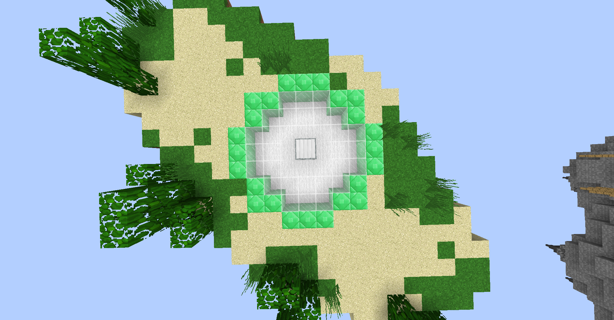
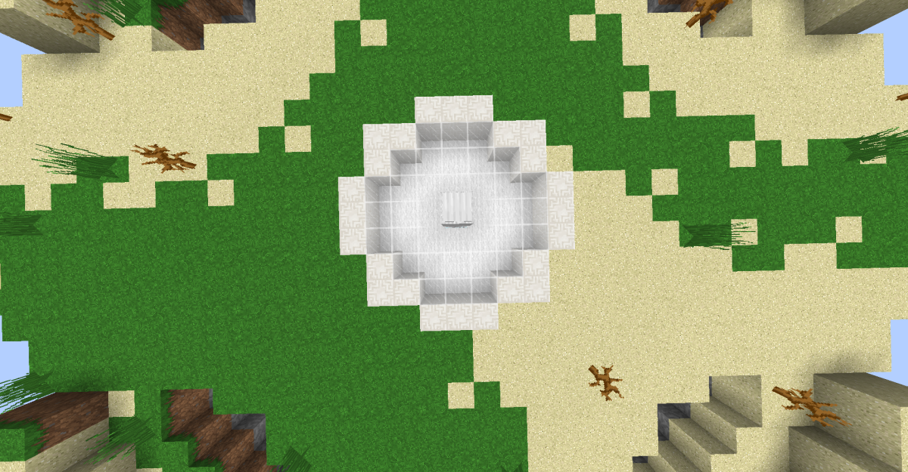
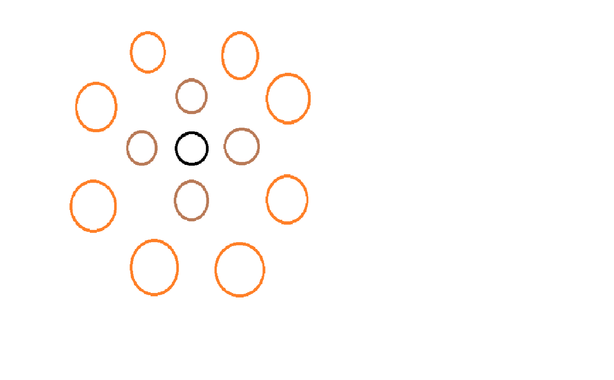

What is Cake Wars?
Cake Wars is a gamemode which is similar to Bedwars, in order to win you must destroy the opponents cake which stops them from being able to respawn whilst protecting your own cake so you are able to respawn, this game can be played in a duo or as team of 4.
Rules of the Game
There is four emerald beacons and one nether star beacon on the Mineplex server. The emerald beacons are used to be able to obtain emeralds at your teams resource generator. At the start of the game all beacons are not captured, any team can capture any beacon at any time (even if it has been captured by another team), once the beacon is captured by your team, emeralds will generate at the resource generator. The same rules apply for the nether star generator which is found in the middle of the map.
 This is a picture of an emerald beacon, notice the outside blocks are emerald blocks, this is an easy way to see if it is an emerald beacon or a nether star beacon.
 This is a picture of a nether star beacon, the outside blocks are made out of nether quartz blocks. This, and the position in relation to the map (in the middle of the map), is an easy way to tell each of the two beacons apart.

This is a drawing of a traditional layout for an average Cake Wars map.
The orange circles is the island where each team starts, the island also has the team cake.
The brown circles are the islands where the emerald beacons are.
The black circle is the island where the nether star beacon is.
Bridging
Bridging is when you go from one place to another where there was not previously any ground to stand on and getting to the other place by building a bridge to get there.
Methods of Bridging
Standard Bridging
The most easy way to bridge, by pressing the crouch button and holding "S" whilst right clicking the edge of your placed block until you reach the intended location.
Speed Bridging
Speed bridging is for more advanced players as it is hard to do and you have a high risk of falling off and dying, it is possible to master this, if you learn this method well.
The way this is done, is similar to the Standard Bridging but instead of crouch you hold "S" until you reach the end of the block, crouch, and then place the block and then release the crouch button and repeat.
God Bridging
Now God Bridging is incredibly hard and only a few players can do this consistently, it is done by holding "S" and placing a block at the exact moment you are able to do so and repeat.
The way this is done, is similar to the Standard Bridging but instead of crouch you hold "S" until you reach the end of the block, crouch, and then place the block and then release the crouch button and repeat.